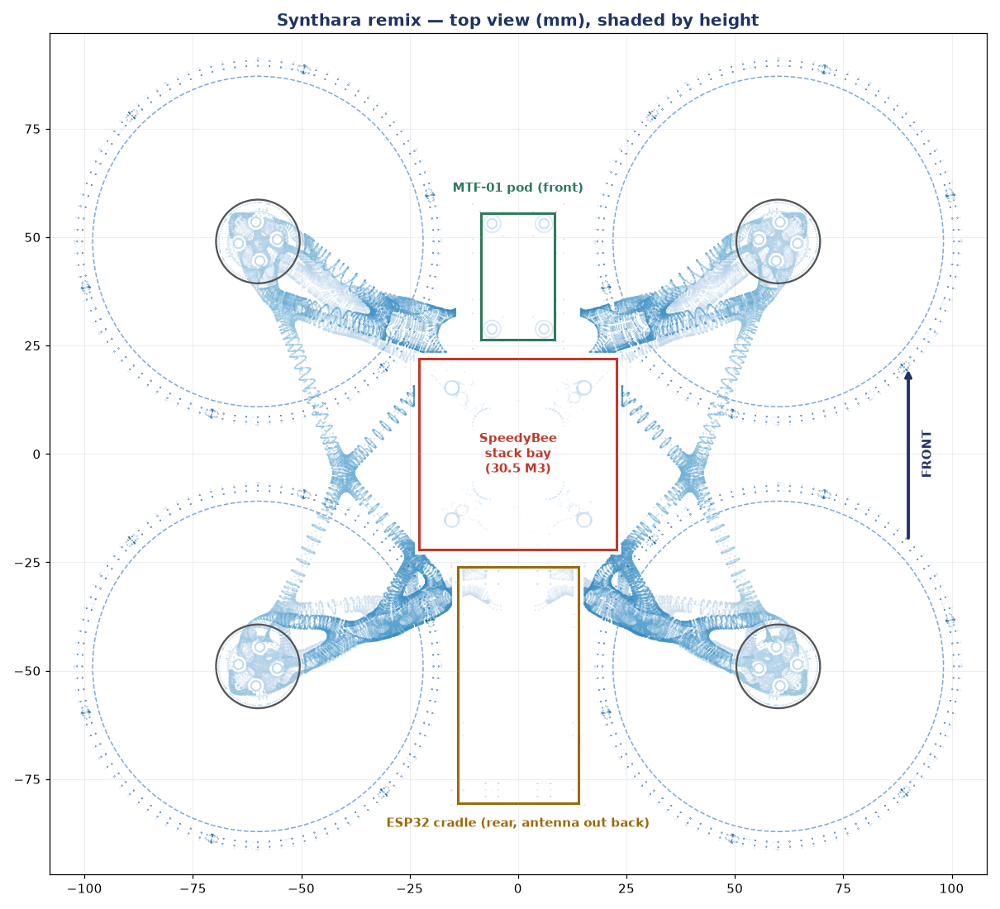

··
At a glance
FRAME_TYPE = 12 (BetaFlightX). Motor test letters go clockwise from front-right. The ESC's power pads face the rear.
power (BAT+, 5V)
ground
FC transmits (T) → device RX
device TX → FC receives (R)
Check these before you solder
- ESP32 sizeThe rear cradle assumes the official DevKitC, 54.4 × 27.9 mm. A clone board can differ, so measure yours.
- Prop fitMotor shaft diameter against the prop bore. Listings for the 1404 disagree (1.5 mm and 2 mm).
- Stack boltsWhether SpeedyBee's M3×30 bolts are long enough to hold the top deck too. If not, use ~35 mm bolts or M3 standoffs.
01
Lay out parts and tools
bench
Temperature-controlled ironSolder 0.6–0.8 mm + fluxMultimeter with beepHex drivers for M2 and M32.2 and 3.2 mm drill bits + pin viceHeat-shrinkSmall zip tiesMedium threadlockerScale, 0.1 gSmoke stopper or current-limited bench PSUMagnifier
No battery needed yetSteps 1–11 run on USB or the bench PSU. You only need a charged pack for the weight and balance check in step 12.
02
Prepare the printed frame
frame
Front is the MTF-01 pod side; the ESP32 cradle is at the rear. Everything in this guide uses that convention, and the FC arrow and top-deck arrow both point to the front.
03
Mount the motors
armsAll four motors are the same, so any motor can go on any arm. Spin direction is set later, in step 11.
04
Power lead and capacitor on the ESC
ESC, off the frameDo this on the bench with the ESC loose. The big battery pads need the most heat, and it's easier without the frame in the way.
PolarityA reversed capacitor or XT30 will destroy the ESC on first power-up. Check twice before moving on.
05
Motor wires to the ESC
ESC on the frame06
Stack the ESC and flight controller
centreBottom to top: M3 bolts up through the stack plate → ESC on its grommets → FC on its grommets → nylon nuts. Compare with the stack drawing in the SpeedyBee manual before tightening.
CheckThe supplied bolts are 30 mm. The top deck also mounts on these bolts in step 9, so measure what's left above the FC nuts now. If it's too short, swap to ~35 mm bolts or M3 standoffs.
07
Fit the MTF-01 flow sensor
front podCheck before solderingConfirm the MTF-01 cable's pin order on the MicoAir label or datasheet. Its output protocol and the ArduPilot settings for it come from ArduPilot's MTF-01 page; set those during configuration, not now.
08
Wire and fit the ESP32 bridge
rear cradleTwo 5 V sourcesDon't plug the ESP32's USB into the laptop while the drone battery is connected. The FC's 5 V and the USB 5 V would both feed the same rail.
In ArduPilot
SERIAL1_PROTOCOL = 2 (MAVLink 2), SERIAL1_BAUD = 115, SERIAL6_PROTOCOL = -1. Connect over tcp:192.168.2.1:5760, and check both directions with python tools/link_check.py in the nlp_drone project. It should report the heartbeat and an answered request.09
Top deck and cable tidy
top10
Power-up checks, no props
bench PSUCustom firmwareThe standard ArduPilot download for
speedybeef4v4 leaves out optical flow and the MAVLink rangefinder, so the MTF-01 does nothing on it. Build Copter 4.7.2 at custom.ardupilot.org with OPTICALFLOW, OPTICALFLOW_MAV, RANGEFINDER_MAVLINK and EKF3_OPTFLOW added, and use a custom build for every future update. Without EKF3_OPTFLOW the FC reads the sensor but the EKF never uses it; before flashing, check the build's extra_hwdef.dat says EK3_FEATURE_OPTFLOW_FUSION 1. The MTF-01 itself must be set to protocol MAV_APM and Mav ID 200 in MicoAssistant (Windows), reached through the FC with SERIAL_PASS1 = 0, SERIAL_PASS2 = 3; power-cycle the sensor afterwards. The first flash from Betaflight needs DFU mode: type bl in Betaflight's CLI, then write the _with_bl.hex with STM32CubeProgrammer. Later updates load the .apj.11
Motor order and direction
props offBefore ArduPilotWhile the FC still runs Betaflight, you can do the same check in Betaflight's Motors tab at app.betaflight.com (Chrome or Edge, not Safari). Battery or bench power must be connected; USB alone won't spin the motors. Its "accelerometer not calibrated" warning doesn't stop the motor test. Betaflight's motors 1–4 are the same corners as M1–M4 here.
12
Props, weight and balance
ready for T6NextT6 tethered hover, in the area and with the controls set out in your risk assessment.
g
Weight log
limit 250 gEstimates come from the parts list and CAD. Type your scale readings into the right column; the total uses your reading wherever you've entered one.
| Part | Estimate | Measured |
|---|---|---|
| All-up weight | ||